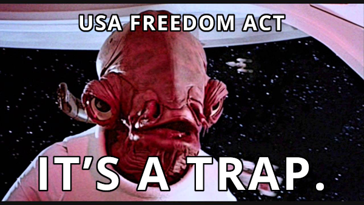

On May 7th, 2015, the Second District Court of Appeals ruled that the NSA's bulk collection of phone call data using Section 215 of the Patriot Act is illegal. This decision, if upheld, would end the NSA's capability to suck up bulk phone call data.
Now Congress is trying to pass a bill— the USA Freedom Act—that would give this power back to the NSA through new legal loopholes, while appearing on the surface to reign-in the NSA. The bill is scheduled for a vote in the House of Representatives this week. Don't be fooled. This bill is designed to appease the public while cementing the government's surveillance authority for years to come.
USA Freedom Act doesn't just fail to reform mass surveillance; it extends and expands it.
- Extends Section 215 of the Patriot Act until 2019 while modernizing it so it can suck up more information on the devices we use most commonly.
- Expand the type of information the government can access. The bill expands call data from landlines to include VoIP calls and video chats, and likely will allow the government to access all data related to smartphone activity.
- Claims to end bulk collection, but would allow the government to continue collecting huge amounts of data by using broad search terms to target big portions of the population and then conducting surveillance on anyone who is "connected" to those targets.
- Provides legal immunity to companies that violate privacy laws and pays them to participate in handing over data to the government.
- Creates broad “emergency” powers for the government to collect all kinds of personal data without prior court approval. The government could use this authority to suck up and retain massaive amounts of data.
- Allows the FBI to access data collected for counterterrorism investigations and use it for investigations outside of counterterrorism cases. The FBI can then set up permanent gag orders to prevent public oversight into their use of this data.
- Creates a new public advocate at the FISA court but lets the government block the advocate from seeing any and all information they choose to keep secret from them.
- Takes wind out of the sails of real reform by appearing to have addressed mass surveillance (without actually doing anything to fundamentally alter mass surveillance).
This bill will prevent *real* NSA reform.
The USA Freedom Act will prevent the reform we really need — the expiration of the bulk collection provisions of the Patriot Act, Section 215 — which is currently scheduled to take place on June 1.
The government has already proven with the existing law that they will exploit every loophole they can find to spy on hundreds of millions of people who are suspected of no wrongdoing. On the surface, the USA Freedom Act appears to reign mass surveillance in, but it is carefully worded to allow all sorts of new spying, while nullifying any privacy benefits it appears to offer.
Contact Congress now — tell them to block the USA Freedom Act!
